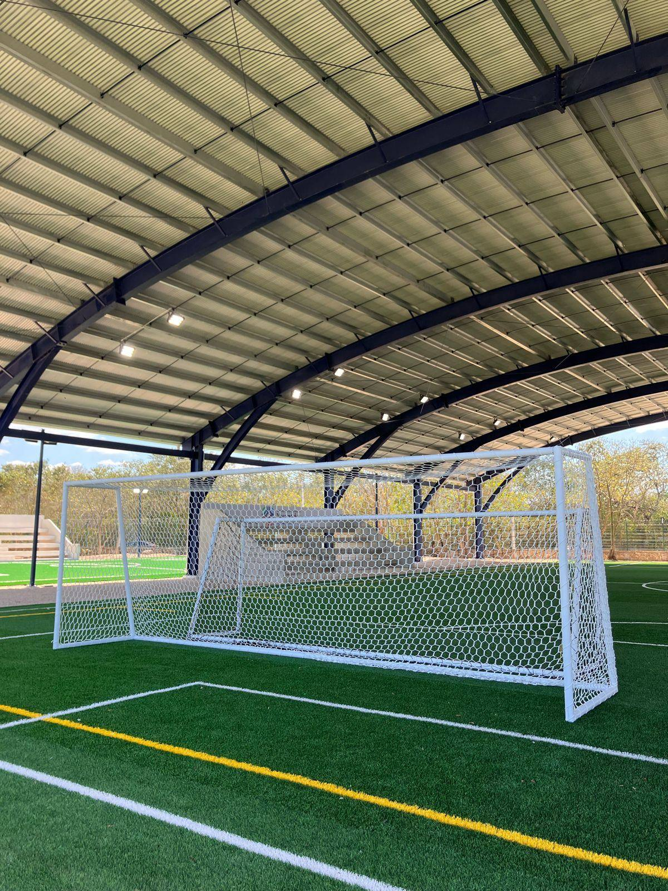
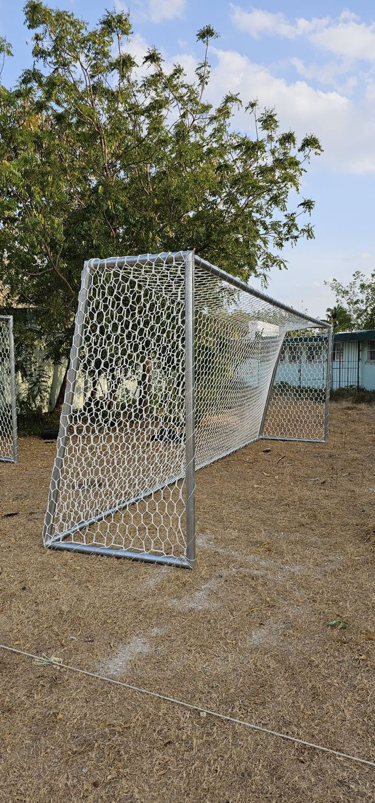
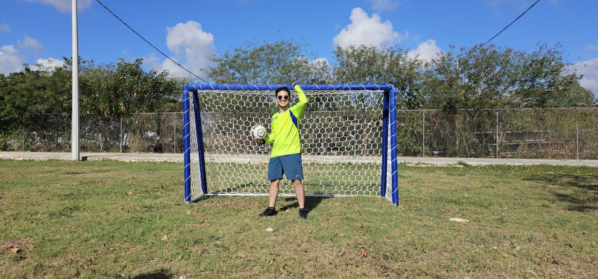
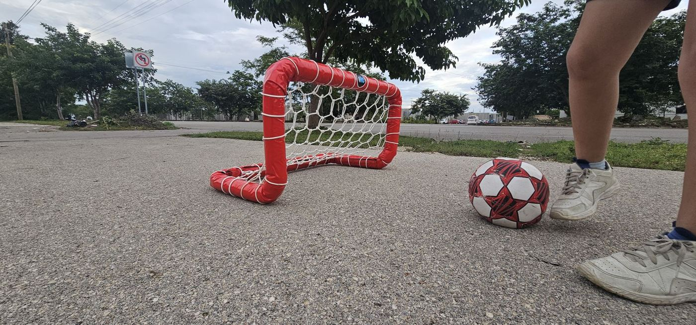
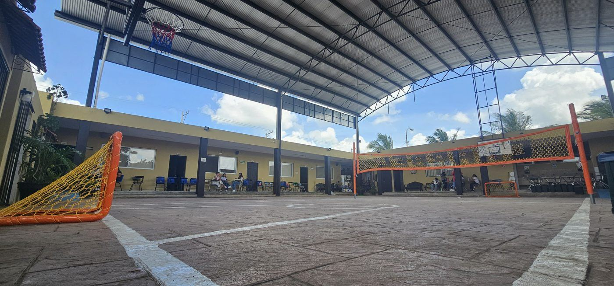
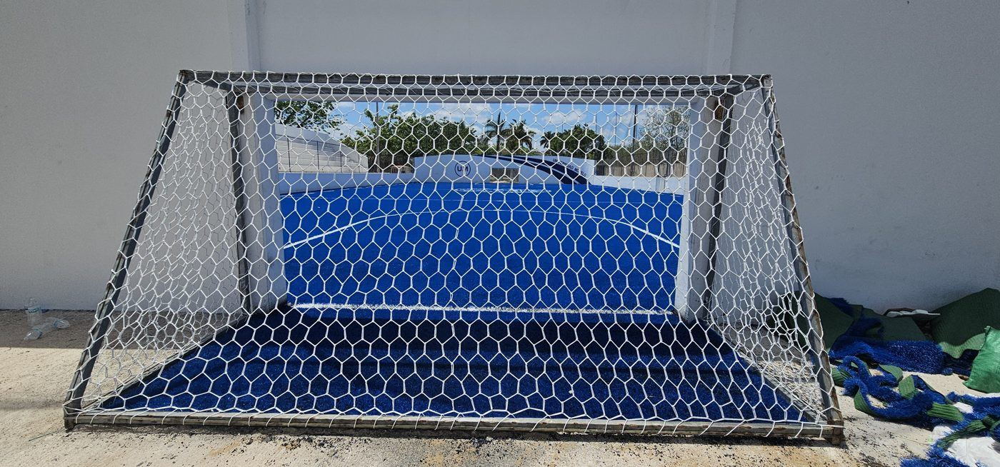

Estructura de tubo galvanizado y red hexagonal tipo colmena tejida a mano. Para canchas, escuelas, clubes y jardines.
Te respondemos el mismo día hábil.
| Modelo | Ancho × alto | Tipo |
|---|---|---|
| Profesional · fútbol 11 | 7.50 × 2.50 m | Galvanizada |
| Fútbol 7 | 6.00 × 2.00 m o 5.00 × 2.00 m | Galvanizada |
| Microbio | 3.20 × 1.80 m | Acojinada |
| Juvenil | 2.00 × 1.50 m | Acojinada |
| Infantil (plegable) | 1.50 × 1.00 m | Acojinada |
| Mini | 0.75 × 0.50 m | Acojinada |
¿Otra medida? Te fabricamos la portería a la medida de tu cancha.






Han confiado en nosotros: Universidad Modelo, Colegio Charbel, Hotel Chablé y los Ayuntamientos de Progreso y Tekax.
Cordón de poliéster trenzado de 60 filamentos, hexágono de 10 × 10 cm y orilla reforzada. Viene etiquetada para marcar el centro de la portería y colocarla fácil. Si ya tienes tu portería, también vendemos solo la red a su medida.
Sí. Todas nuestras porterías llevan su red hexagonal tejida a mano.
De las dos formas.
Microbio, juvenil, infantil y mini son acojinadas: forro de polifoam y cubierta de lona en colores personalizados, más seguras para los pequeños.
Sí. Si ya tienes tu portería, te fabricamos la red hexagonal a su medida.
Sí, a todo México. Como son piezas grandes, el envío se cotiza según el modelo y tu ciudad, y te confirmamos el tiempo de entrega al cotizar.